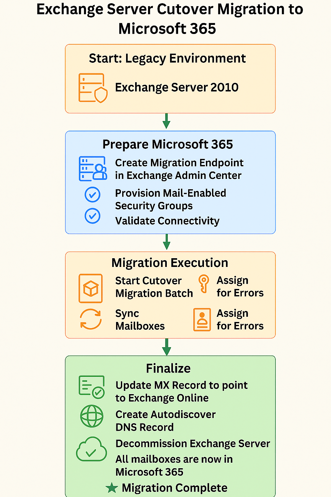

Challenge
Our organization needed to retire legacy Exchange infrastructure and migrate all mailboxes to Exchange Online. With fewer than 150 mailboxes, a cutover migration was the most efficient approach. The goal was zero data loss, minimal downtime, and full compliance with Microsoft’s recommended practices.
Tools & Technologies
- Exchange Server 2010 (Source)
- Microsoft 365 Exchange Admin Center
- Outlook Anywhere (RPC over HTTP)
- MRS Proxy Service
- DNS Management (MX & Autodiscover Records)
Implementation
- Verified domain ownership and configured DNS records
- Enabled Outlook Anywhere and installed SSL certificate
- Enabled MRS Proxy and validated connectivity via Remote Connectivity Analyzer
- Created migration endpoint in Exchange Admin Center
- Provisioned empty mail-enabled security groups in Microsoft 365
- Created and started cutover migration batch
- Monitored sync status and resolved any mailbox-level errors
- Updated MX record to route mail directly to Exchange Online
- Deleted migration batch and decommissioned Exchange Server
- Created Autodiscover DNS record and assigned licenses to users
- Created a Relay server assigning the IP of the old exchange server using IIS to support existing infrastructure
Migration Flow Diagram
Impact
- Successfully migrated 1000+ mailboxes with zero data loss
- Retired legacy Exchange infrastructure and reduced maintenance overhead
- Improved email performance and reliability via Exchange Online
- Enabled modern security features like MFA and Conditional Access
- Relay server supported existing infrastructure services that used the local ip of the old exchange server to send email
Reference
Migration steps followed from Microsoft’s official guide: Cutover Migration to Office 365